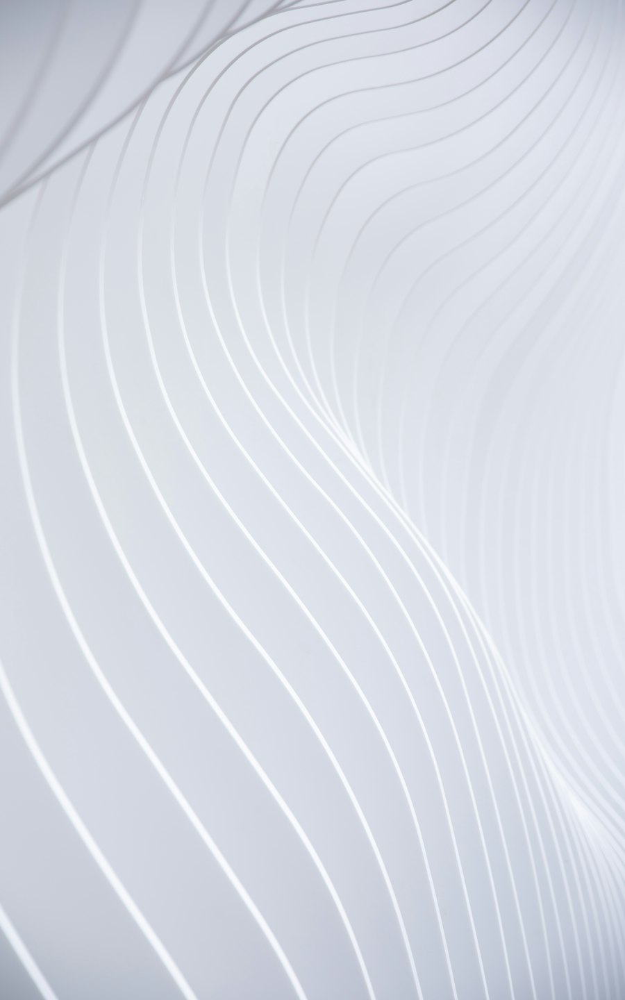

A dark mode switch that does not flash

This site has a small round switch in the header that flips it between black and white. Flipping colours is the easy part. The parts that took thought are the first frame after a reload, the things CSS cannot reach, and making the change itself look deliberate instead of like a glitch.
1. Tokens, not colours
No colour in the stylesheet is written down directly. Every one is a custom property on :root, and light mode is the same list again under one attribute:
:root {
--color-black: #000000; /* the page background */
--color-white: #ffffff; /* text and the brand colour */
--color-surface: #101010;
--color-muted: #a3a3a3;
}
:root[data-theme="light"] {
--color-black: #ffffff;
--color-white: #000000;
--color-surface: #f4f4f4;
--color-muted: #5a5a5a;
}Switching themes is then one line of JavaScript: set or remove data-theme on <html>. Yes, in light mode --color-black is white. The names date from before there was a light mode. A name like --color-bg would have been better from the start, and that is the main thing I would do differently.
2. The flash on reload
The choice is saved in localStorage. The obvious place to read it back is in the script that builds the switch, at the bottom of the page. The problem is that by then the browser has already painted the page once, in the default dark theme. Anyone who picked light mode gets a black flash on every reload.
The fix is a tiny script inline in the <head>, before the stylesheet. It runs before anything is painted, so the first frame is already the right theme:
<script>
(function () {
try {
if (localStorage.getItem('misc-theme') === 'light')
document.documentElement.setAttribute('data-theme', 'light');
} catch (e) {}
})();
</script>The try is there because localStorage can throw, for instance with cookies blocked. In that case the page just stays dark.
3. The things CSS cannot reach
Tokens cover everything drawn by CSS. Two things on this site paint themselves: the particle animation behind the homepage hero (a canvas), and the WebGL carousel of projects. Neither reads CSS variables while it draws, so each has to be told.
- The switch fires a
themechangeevent onwindow, and the particle canvas listens for it and redraws in the new colours. - The carousel watches the
data-themeattribute itself with aMutationObserver, reads the new token values and passes them to its shader.
The idea: if something draws its own pixels, the theme is its problem too. Give it a way to hear about the change.
4. The wave
An instant swap from black to white looks like something broke. Instead, the new theme sweeps down the screen behind a wave, the same wave shape as the page transitions on the rest of the site.
That uses the View Transitions API. document.startViewTransition() takes a snapshot of the page, runs your change, and then shows the old snapshot on top of the new page. By default it cross-fades the two. I switch that off and put a mask on the old snapshot instead: an SVG wave, transparent above the crest and solid below it. Sliding the mask down reveals the new theme underneath, following the curve.
// theme-toggle.js
root.classList.add('theme-sweep');
const vt = document.startViewTransition(() => apply(next));
vt.finished.then(() => root.classList.remove('theme-sweep'));/* the old theme, on top, masked by the wave */
html.theme-sweep::view-transition-old(root) {
z-index: 1;
mask-image: var(--theme-wave);
mask-size: 100% 200%;
animation: theme-wave-down 900ms cubic-bezier(0.66, 0, 0.34, 1) forwards;
}
@keyframes theme-wave-down {
from { mask-position: 0 100%; }
to { mask-position: 0 0%; }
}The page underneath really has switched already. The wave is not a curtain hiding the change; it is the old theme being peeled off.
5. Fallbacks
- No View Transitions support: the theme simply switches at once. The feature is a bonus, never a requirement.
- Reduced motion: no wave. A full-screen sweep is exactly the kind of movement that setting asks to avoid, so the theme switches straight away.
- The button itself: its label always says what it will do (“Switch to light mode”), and
aria-pressedtells screen readers which state it is in.
The idea: one attribute swaps the whole site. Most of the work goes into the first frame, the parts that draw themselves, and the moment of switching.